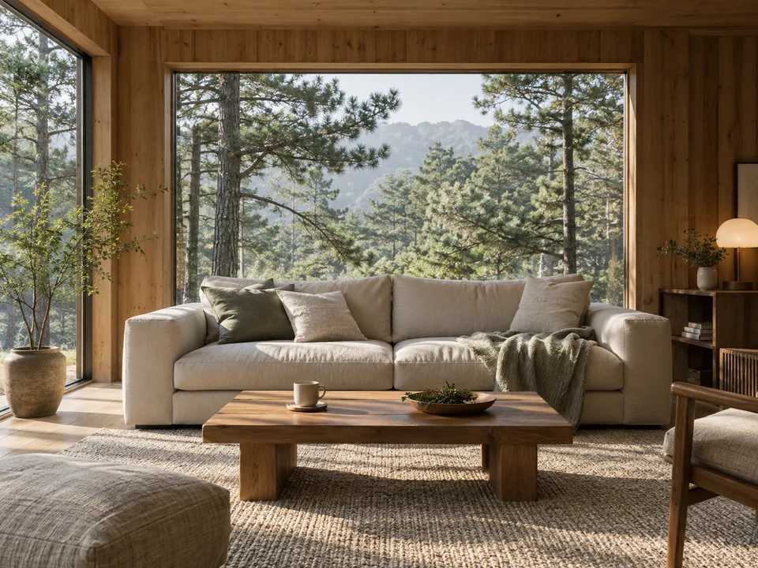

머무는 별장
숙박과 일상의 기반이 되는 체류 공간.
MY LODGE BUSINESS VALLEY / CHIANG MAI
공간·체류·운영 구상치앙마이에서의 체류와 업무, 사람과 새로운 가능성을
연결하는 마이롯지의 다음 경험을 그립니다.

01 / FIND YOUR PURPOSE
체류에서 시작해 업무와 교류까지.
필요한 경험을 중심으로 살펴보세요.
짧은 체험부터 장기 체류까지, 숙박과 일상의 편의를 함께 구상합니다. 객실·생활 지원·청소의 포함 범위는 실제 공급 조건을 확인한 뒤 안내합니다.
체류 유형 살펴보기 ↗업무 좌석과 회의·협업 공간을 체류와 연결하는 구상입니다. 인터넷·장비·좌석 수·이용 시간·추가 비용은 운영 준비와 함께 확인합니다.
업무 공간 구상 보기 ↗커뮤니티 모임과 운영자의 소개를 통해 필요한 사람을 만나는 방식을 구상합니다. 프로필 공개와 소개는 당사자의 동의를 전제로 하며, 체류 중 모든 모임 참여를 필수로 두지 않습니다.
커뮤니티 준비 상태 보기 ↗책임자·범위·일정·대가가 확인된 과제를 중심으로 협업을 구상합니다. 실제 공개 과제와 참여 조건은 승인 후 안내하며, 수익이나 보상을 확약하지 않습니다.
협업 준비 상태 보기 ↗02 / SEVEN SPACES
통합 기획서에 담긴 일곱 가지 공간 구성안입니다.
숙박과 일상의 기반이 되는 체류 공간.
개인 업무·회의·협업을 위한 공간 구상.
커피와 식사, 선택 모임이 이어지는 공간.
창업과 사업 경험을 나누는 공간 구상.
제작·전문 활동과 사람의 연결을 돕는 공간.
휴식과 건강한 생활을 위한 공간 구상.
프로그램과 행사, 공유 활동을 위한 자리.
전체 구성안 · 실제 주소·규모·시설 공급·운영 여부는 미확정입니다.
03 / STAY YOUR WAY
기획서의 체류 유형을 기준으로 살펴보세요.
공간과 커뮤니티를 짧게 경험하는 체류.
숙박·업무 체험·안내 프로그램 포함 여부 확인 필요업무의 집중과 휴가의 여유를 함께.
좌석·회의·청소·연장·추가 요금 확인 필요일과 생활의 리듬을 이어가는 장기 체류.
월 비용·예치금·공과금·생활 지원 확인 필요04 / BEFORE YOUR STAY
공간 구상과 실제 체류 가능 상태를 함께 살펴보세요.
현재 사전 안내 단계입니다. 실제 예약·결제·회원가입·관심 등록은 제공하지 않습니다.
MY LODGE / YOUR NEXT CHAPTER
Business Valley의 준비 상태와 국내 공유별장 구상을 살펴보세요.